library(tidyverse)
library(palmerpenguins)Warning: le package 'palmerpenguins' a été compilé avec la version R 4.5.0library(ggthemes)
library(ggplot2)
R has several systems for making graphs, but ggplot2 is one of the most elegant and most versatile. ggplot2 implements the grammar of graphics, a coherent system for describing and building graphs. With ggplot2, you can do more and faster by learning one system and applying it in many places.
library(tidyverse)
library(palmerpenguins)Warning: le package 'palmerpenguins' a été compilé avec la version R 4.5.0library(ggthemes)
library(ggplot2)This chapter focuses on ggplot2, one of the core packages in the tidyverse. To access the datasets, help pages, and functions used in this chapter, load the tidyverse by running:
Do penguins with longer flippers weigh more or less than penguins with shorter flippers? You probably already have an answer, but try to make your answer precise. What does the relationship between flipper length and body mass look like? Is it positive? Negative? Linear? Nonlinear? Does the relationship vary by the species of the penguin? How about by the island where the penguin lives? Let’s create visualizations that we can use to answer these questions.
A variable is a quantity, quality, or property that you can measure.
A value is the state of a variable when you measure it. The value of a variable may change from measurement to measurement.
An observation is a set of measurements made under similar conditions (you usually make all of the measurements in an observation at the same time and on the same object). An observation will contain several values, each associated with a different variable. We’ll sometimes refer to an observation as a data point.
Tabular data is a set of values, each associated with a variable and an observation. Tabular data is tidy if each value is placed in its own “cell”, each variable in its own column, and each observation in its own row.
In this context, a variable refers to an attribute of all the penguins, and an observation refers to all the attributes of a single penguin.
This data frame contains 8 columns. For an alternative view, where you can see all variables and the first few observations of each variable, use glimpse()
palmerpenguins::penguins |>
dplyr::glimpse()Rows: 344
Columns: 8
$ species <fct> Adelie, Adelie, Adelie, Adelie, Adelie, Adelie, Adel…
$ island <fct> Torgersen, Torgersen, Torgersen, Torgersen, Torgerse…
$ bill_length_mm <dbl> 39.1, 39.5, 40.3, NA, 36.7, 39.3, 38.9, 39.2, 34.1, …
$ bill_depth_mm <dbl> 18.7, 17.4, 18.0, NA, 19.3, 20.6, 17.8, 19.6, 18.1, …
$ flipper_length_mm <int> 181, 186, 195, NA, 193, 190, 181, 195, 193, 190, 186…
$ body_mass_g <int> 3750, 3800, 3250, NA, 3450, 3650, 3625, 4675, 3475, …
$ sex <fct> male, female, female, NA, female, male, female, male…
$ year <int> 2007, 2007, 2007, 2007, 2007, 2007, 2007, 2007, 2007…Let’s recreate this plot step-by-step.
library(ggplot2)
ggplot(
data = penguins,
mapping = aes(x = flipper_length_mm, y = body_mass_g)) +
geom_point() +
geom_smooth(method = "lm")Warning: Removed 2 rows containing non-finite outside the scale range
(`stat_smooth()`).Warning: Removed 2 rows containing missing values or values outside the scale range
(`geom_point()`).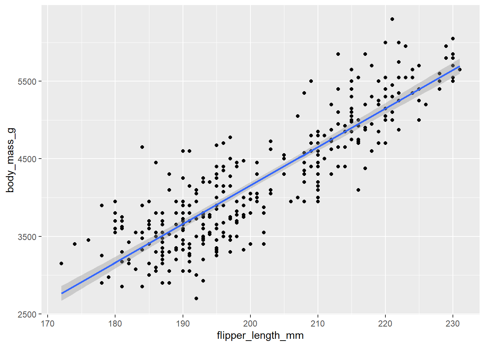
Scatterplots are useful for displaying the relationship between two numerical variables, but it’s always a good idea to be skeptical of any apparent relationship between two variables and ask if there may be other variables that explain or change the nature of this apparent relationship. For example, does the relationship between flipper length and body mass differ by species? Let’s incorporate species into our plot and see if this reveals any additional insights into the apparent relationship between these variables. We will do this by representing species with different colored points.
Typically, the first one or two arguments to a function are so important that you should know them by heart. The first two arguments to ggplot() are data and mapping, in the remainder of the book, we won’t supply those names. That saves typing, and, by reducing the amount of extra text, makes it easier to see what’s different between plots. That’s a really important programming concern that we’ll come back to in Chapter 25.
Rewriting the previous plot more concisely yields:
ggplot(penguins,aes(x = flipper_length_mm, y = body_mass_g)) +
geom_point()Warning: Removed 2 rows containing missing values or values outside the scale range
(`geom_point()`).
In the future, you’ll also learn about the pipe, |>, which will allow you to create that plot with:
penguins |>
ggplot(aes(x = flipper_length_mm, y = body_mass_g)) +
geom_point()Warning: Removed 2 rows containing missing values or values outside the scale range
(`geom_point()`).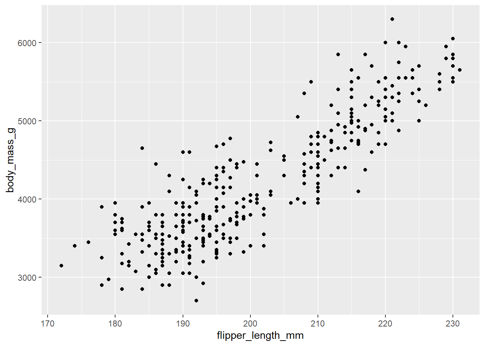
How you visualize the distribution of a variable depends on the type of variable: categorical or numerical.
A variable is categorical if it can only take one of a small set of values. To examine the distribution of a categorical variable, you can use a bar chart. The height of the bars displays how many observations occurred with each x value.
ggplot(penguins, aes(x = species)) +
geom_bar()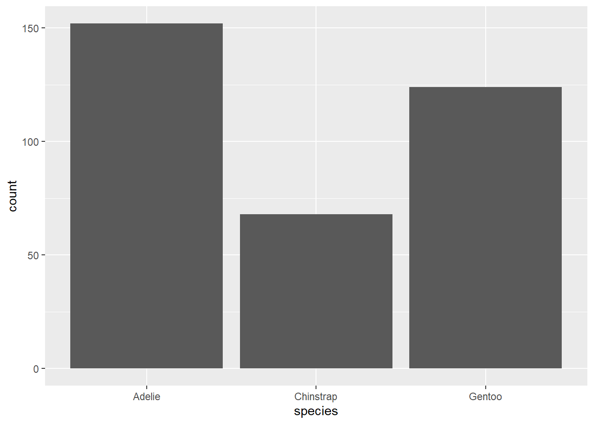
In bar plots of categorical variables with non-ordered levels, like the penguin species above, it’s often preferable to reorder the bars based on their frequencies. Doing so requires transforming the variable to a factor (how R handles categorical data) and then reordering the levels of that factor.
library(forcats)
ggplot(penguins, aes(x = fct_infreq(species))) +
geom_bar()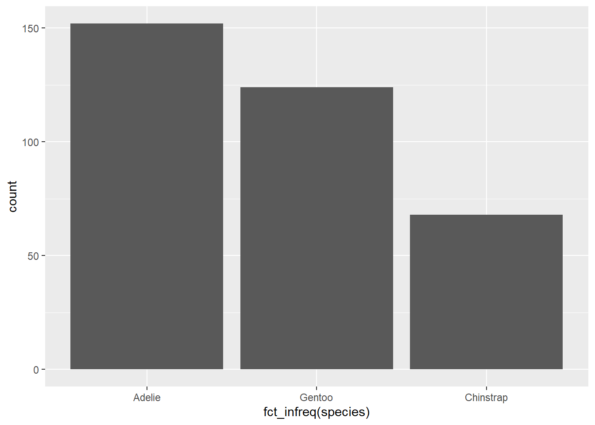
A variable is numerical (or quantitative) if it can take on a wide range of numerical values, and it is sensible to add, subtract, or take averages with those values. Numerical variables can be continuous or discrete.
One commonly used visualization for distributions of continuous variables is a histogram.
ggplot(penguins, aes(x = body_mass_g)) +
geom_histogram(bindwidth = 200)Warning in geom_histogram(bindwidth = 200): Ignoring unknown parameters:
`bindwidth``stat_bin()` using `bins = 30`. Pick better value with `binwidth`.Warning: Removed 2 rows containing non-finite outside the scale range
(`stat_bin()`).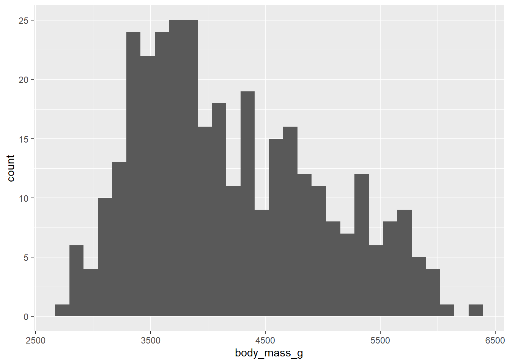
A histogram divides the x-axis into equally spaced bins and then uses the height of a bar to display the number of observations that fall in each bin. In the graph above, the tallest bar shows that 39 observations have a body_mass_g value between 3,500 and 3,700 grams, which are the left and right edges of the bar.
An alternative visualization for distributions of numerical variables is a density plot. A density plot is a smoothed-out version of a histogram and a practical alternative, particularly for continuous data that comes from an underlying smooth distribution. We won’t go into how geom_density() estimates the density (you can read more about that in the function documentation), but let’s explain how the density curve is drawn with an analogy.
ggplot(penguins, aes(x = body_mass_g)) +
geom_density()Warning: Removed 2 rows containing non-finite outside the scale range
(`stat_density()`).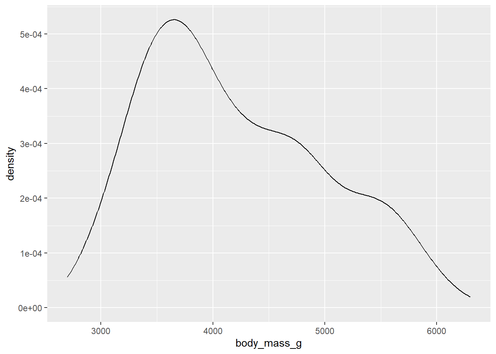
To visualize a relationship we need to have at least two variables mapped to aesthetics of a plot. In the following sections you will learn about commonly used plots for visualizing relationships between two or more variables and the geoms used for creating them.
To visualize the relationship between a numerical and a categorical variable we can use side-by-side box plots. A boxplot is a type of visual shorthand for measures of position (percentiles) that describe a distribution. It is also useful for identifying potential outliers. As shown in Figure 1.1, each boxplot consists of:
ggplot(penguins, aes(x = species, y = body_mass_g)) +
geom_boxplot()Warning: Removed 2 rows containing non-finite outside the scale range
(`stat_boxplot()`).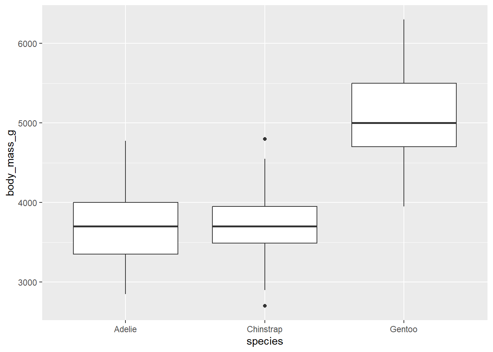
Alternatively, we can make density plots with geom_density().
ggplot(penguins, aes(x = body_mass_g, colour = species)) +
geom_density(linewidth = 0.75)Warning: Removed 2 rows containing non-finite outside the scale range
(`stat_density()`).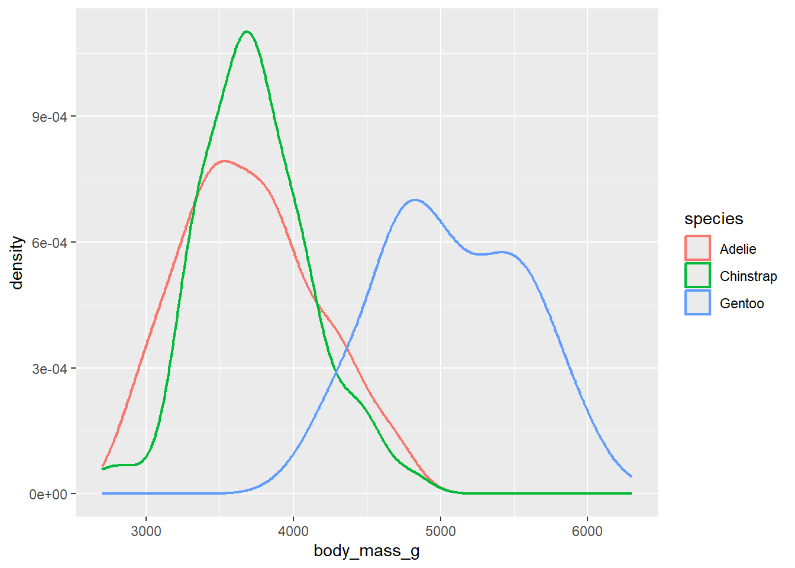
ggplot(penguins, aes(x = body_mass_g, color = species, fill = species)) +
geom_density(alpha = 0.5)Warning: Removed 2 rows containing non-finite outside the scale range
(`stat_density()`).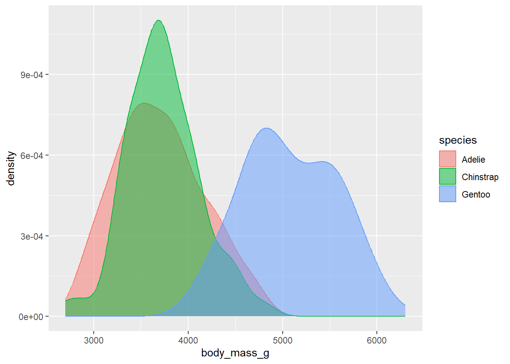
We can use stacked bar plots to visualize the relationship between two categorical variables. For example, the following two stacked bar plots both display the relationship between island and species, or specifically, visualizing the distribution of species within each island.
The first plot shows the frequencies of each species of penguins on each island. The plot of frequencies shows that there are equal numbers of Adelies on each island. But we don’t have a good sense of the percentage balance within each island.
ggplot(penguins, aes(x = island, fill = species)) +
geom_bar()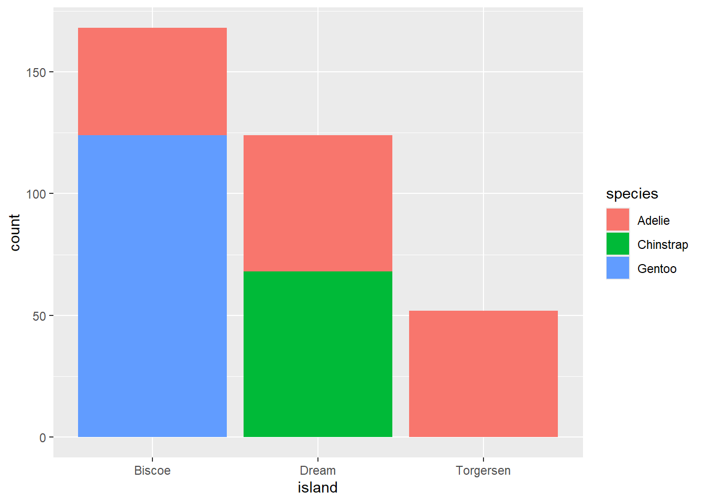
The second plot, a relative frequency plot created by setting position = "fill" in the geom, is more useful for comparing species distributions across islands since it’s not affected by the unequal numbers of penguins across the islands. Using this plot we can see that Gentoo penguins all live on Biscoe island and make up roughly 75% of the penguins on that island, Chinstrap all live on Dream island and make up roughly 50% of the penguins on that island, and Adelie live on all three islands and make up all of the penguins on Torgersen.
ggplot(penguins, aes(x = island, fill = species)) +
geom_bar(position = "fill")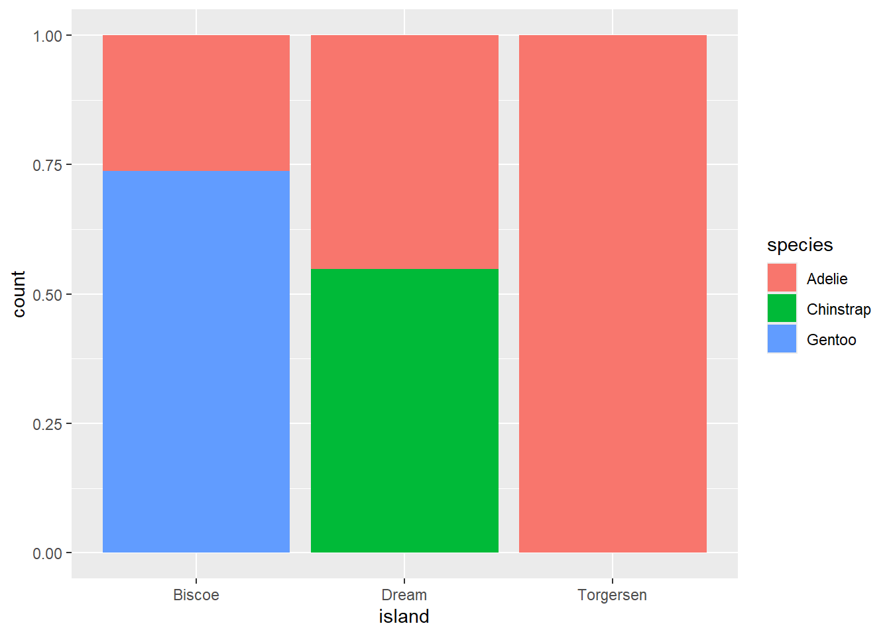
So far you’ve learned about scatterplots (created with geom_point()) and smooth curves (created with geom_smooth()) for visualizing the relationship between two numerical variables. A scatterplot is probably the most commonly used plot for visualizing the relationship between two numerical variables.
ggplot(penguins, aes(x = flipper_length_mm, y = body_mass_g)) +
geom_point()Warning: Removed 2 rows containing missing values or values outside the scale range
(`geom_point()`).
As we saw in Section 1.2.4, we can incorporate more variables into a plot by mapping them to additional aesthetics. For example, in the following scatterplot the colors of points represent species and the shapes of points represent islands. However adding too many aesthetic mappings to a plot makes it cluttered and difficult to make sense of. Another way, which is particularly useful for categorical variables, is to split your plot into facets, subplots that each display one subset of the data.
To facet your plot by a single variable, use facet_wrap(). The first argument of facet_wrap() is a formula3, which you create with ~ followed by a variable name. The variable that you pass to facet_wrap() should be categorical.
ggplot(penguins, aes(x = flipper_length_mm, y = body_mass_g)) +
geom_point(aes(colour = species, shape = species)) +
facet_wrap(~island)Warning: Removed 2 rows containing missing values or values outside the scale range
(`geom_point()`).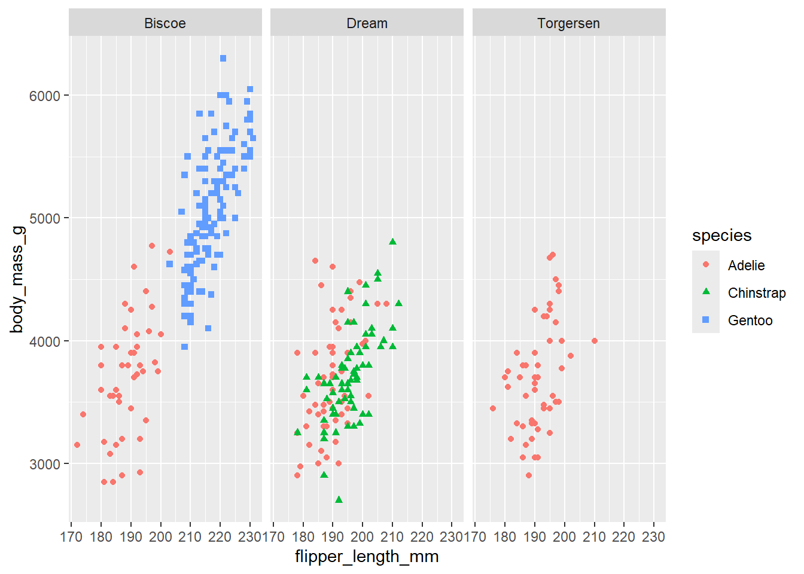
Once you’ve made a plot, you might want to get it out of R by saving it as an image that you can use elsewhere. That’s the job of ggsave(), which will save the plot most recently created to disk:
ggplot(penguins, aes(x = flipper_length_mm, y = body_mass_g)) +
geom_point()Warning: Removed 2 rows containing missing values or values outside the scale range
(`geom_point()`).
ggsave("penguin-plot.png")Saving 7 x 5 in imageWarning: Removed 2 rows containing missing values or values outside the scale range
(`geom_point()`).